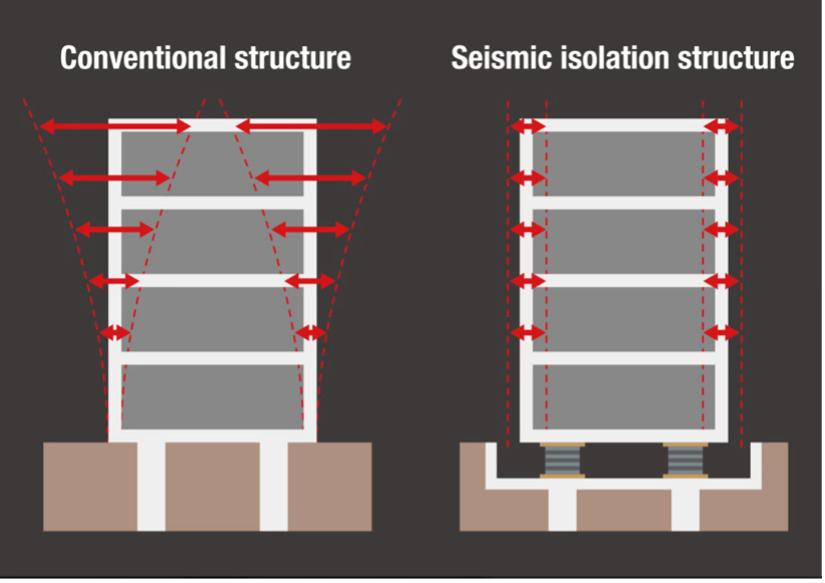

Table of contents |
|---|
| Abstract |
| Introduction |
| How base isolation works? |
| Types of Base Isolators |
| Advantages of Base Isolation |
| Limitations of Base Isolation |
| Conclusion |
| References |
[Write your Base Isolation abstract here.]
One method that helps improve a building's ability to withstand earthquakes is base isolation, which helps to minimize the movement transferred from foundation to the building. The purpose of this article is to investigate how effective base isolation is in protecting buildings during earthquakes . However it success depends on the buildings designs and characteristics of the earthquakes . This article will begin by discussing how base isolation works and describing varies type of isolators ,followed by the discussion of their advantage and limitations in earthquake resistance budlings design .
During an earthquake , seismic waves can cause the ground to shake making the building to vibrate and generate force within their structure . Isolation devices called base isolators are installed between base of the building and building above enabling controlled motion during earthquake vibrations . In conventional buildings earthquake motion is transmitted directly through foundation into building ,making the structure to vibrate . However base isolated buildings use flexible device that enables controlled horizontal movement which can minimize the impact of ground shaking . This alters how structure responds to earthquake vibrations and can minimize the forces acting on the building . Damping helps minimise structural vibrations by dissipating energy . Base isolation increases the natural period of a building by making its support system more flexible (Warn and Ryan, 2012).

Figure 1 shows the comparison between conventional building and base isolated building ,showing how base isolators enable controlled horizontal movement during earthquakes .
By enabling controlled horizontal movement and minimizing building vibrations ,base isolation can improve the ability of buildings to resist earthquake force and reduce risk of damage
Laminated rubber bearings are made of alternating layers of rubber and steel .The rubber allows horizontal flexibility whereas steel layer help withstand weight of the building Lead-rubber bearings are similar to laminated rubber bearings but have lead core in the center. The lead core dissipates earthquake energy through deformation helping to control excessive vibrations . Friction pendulum systems use curved surfaces that allow sliding to allow horizontal movement during earthquakes . Friction dissipates energy, while the curved surface helps the building to return toward it initial position . Rubber bearing depends on flexibility while friction pendulum systems use sliding surfaces to limit earthquake forces. Engineers choose various types of base isolators based on factors such as weight of the structure ,building design and predicted earthquake conditions . Lead-rubber bearings also contain a lead core, which helps dissipate earthquake energy during deformation (Warn and Ryan, 2012).
By allowing controlled horizontal movement, base isolators can reduce the forces affecting the building during earthquakes. By reducing the earthquake forces acting on a building, base isolation can minimise structural damage to important components such as columns, beams and walls. Base isolation can also Increase protection of occupants and reduce equipment damage inside the buildings by minimising the vibrations transmitted through the structure. This is especially useful for hospitals, where sensitive medical equipment could be harmed during earthquakes. Another benefit of base isolation is that it can help essential buildings continue operating, after earthquakes by reducing structural damage and protecting equipment. Çelebi (1996) reported that the highest storey drift ratio of the base-isolated USC hospital was limited to10% of the allowable limit during the 1994 Northridge earthquake, helping explain why no damage to the building's structure. This is particularly important for hospitals, where maintaining essential services can help protect people's lives.
One disadvantage of base isolation is expensive installation, as specialized materials and engineering techniques are needed . Base isolation may not be appropriate for all buildings because its performance is influenced by factors such as building height, structural design and foundation conditions. Without adequate clearance, the building may collide with nearby building , potentially causing damage. The effectiveness of base isolation can also rely on earthquake characteristics, including the intensity, frequency and duration of ground shaking. Incorrect installation or inadequate maintenance may limit their performance and raise the risk of structural damage. Base isolation can increase the horizontal displacement experienced at the isolation level, meaning that sufficient space must be provided to accommodate this movement (Warn and Ryan, 2012). In general, these disadvantages highlight although base isolation can improve earthquake resistance, its effectiveness depends on appropriate structural design, seismic conditions and regular maintenance.
This article has explored how base isolation improved the earthquake resistance of buildings . Base isolation works by allowing buildings to control horizontal movement and increasing a building's natural period, base isolation can reduce the seismic forces transmitted from the ground into the building . The key benefits of base isolation include limiting structural damage, improving occupant safety and helping essential buildings remain operational after earthquakes. Despite these advantages, base isolation has certain limitations such as expensive installation the need for Sufficient clearance for movement and varying effectiveness depending on earthquake conditions. Taking both the advantages and limitations into consideration, base isolation can significantly improve buildings earthquake resistance, provided that the system is appropriately designed for the structure and expected seismic conditions.
References
Warn and Ryan (2012) — A Review of Seismic Isolation for Buildings: Historical Development and Research Needs.
https://doi.org/10.3390/buildings2030300Warn, G.P. and Ryan, K.L. (2012) 'A Review of Seismic Isolation for Buildings: Historical Development and Research Needs', Buildings, 2(3), pp. 300–325. Available at: https://doi.org/10.3390/buildings2030300
Çelebi, M. (1996) 'Successful performance of a base-isolated hospital building during the 17 January 1994 Northridge earthquake', The Structural Design of Tall Buildings, 5(2), pp. 95–109. Available at: https://doi.org/10.1002/(SICI)1099-1794(199606)5:2%3C95::AID-TAL71%3E3.0.CO;2-7
Warn and Ryan (2012) — A Review of Seismic Isolation for Buildings: Historical Development and Research Needs.
https://doi.org/10.3390/buildings2030300Loading last update time...